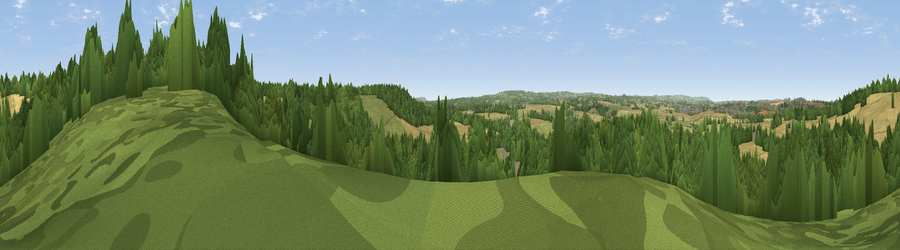

Viewpoint near Hemington
#26649 in England · top 47% of its area beats it · near Hemington · access?Where it is
The exact computed spot (ST 71225 52925). Click the marker for map links.
Public access: no public right of way or access land is recorded at this exact spot — it may be on private land. Computed from Natural England's CRoW access layer and OpenStreetMap rights of way — not the legal definitive map. Always verify locally.
The view, rendered

A 360° render of this exact spot computed from the terrain model, tree cover and land cover — summer colours, afternoon light, calibrated against photographs of famous viewpoints. Real trees, hedges and buildings will differ in detail.
The panorama
Grey silhouette: terrain skyline in each direction (720 bearings, Earth curvature and refraction included). Dashed green: skyline with trees (+15 m) and buildings (+8 m) as obstacles. Blue strip: how far the ground is visible on each bearing.
Where the view opens
Wedge length = distance to the farthest visible ground on that bearing (vegetation-aware). Rings at 10, 25 and 50 km.
What fills the view
48% woodland · 28% cropland · 24% grassland ·
Angular shares of the visible panorama (visual magnitude), not map area. Landscape diversity 0.48 (0–1 Shannon).
Key numbers
More beautiful places nearby
The staircase of upgrades: each row has a higher view potential than everything closer. Driving times are estimates from straight-line distance, calibrated against real road routing — check an actual route before setting out.
| Place | Direction | Drive | Score |
|---|---|---|---|
| Viewpoint near Hemington | ESE · 2 km | ~5 min | 47.2 |
| Viewpoint near Great Elm | SE · 4 km | ~10 min | 48.2 |
| Viewpoint near Wellow | NE · 5 km | ~11 min | 53.9 |
| Viewpoint near Peasedown St. John | N · 5 km | ~11 min | 60.1 |
| Viewpoint near Stratton on the Fosse | WSW · 7 km | ~14 min | 61.0 |
| Viewpoint near Inglesbatch | N · 8 km | ~16 min | 68.8 |
| Viewpoint near East Cranmore | SSW · 9 km | ~18 min | 69.2 |
| Viewpoint near Oakhill | SW · 10 km | ~19 min | 71.3 |
51.27474, -2.41389 · source: screening · position refined by local search. Computed location — check access rights before visiting.